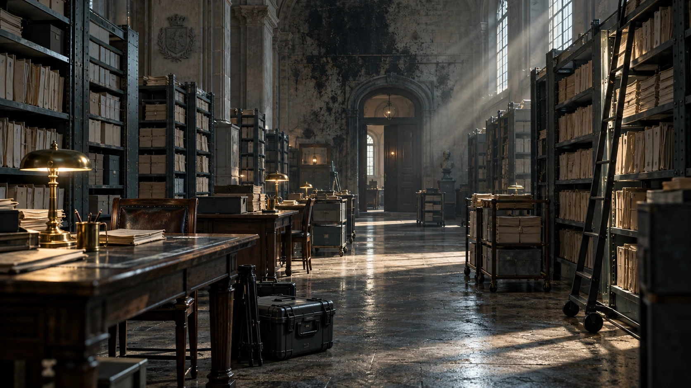

قضية مفتوحة · تحقيق تفاعلي
الملف ٠١٧
التوقيع
الرابع.
بعض الأوراق لا تحترق. تتعلّم فقط كيف تكذب.
يُحفظ تقدّمك على هذا الجهاز
٠١ / خلفية القضية
ما تركه الحريق.
مهمّتك
لا تبحث عن أكثر الأشخاص إثارة للريبة. ابحث عمّا تثبته الأوراق. افحص الأدلة، قارن السجلات، ثم أكمل الاستنتاجات لتفتح خلاصة القضية.

٠٢ / أطراف الملف
خمسة وجوه.
وحقيقة بين السطور.
افتح صورة الشخصية لتقرأ ملفها.
واترك الحكم لما تثبته الأدلة.
٠٣ / طاولة التحقيق
اقرأ ما بين السطور.
٠٤ / ابنِ استنتاجك
ما الذي تستطيع إثباته؟
كل إجابة تفتح الخطوة التالية.
الأدلة متاحة لك في أي وقت.